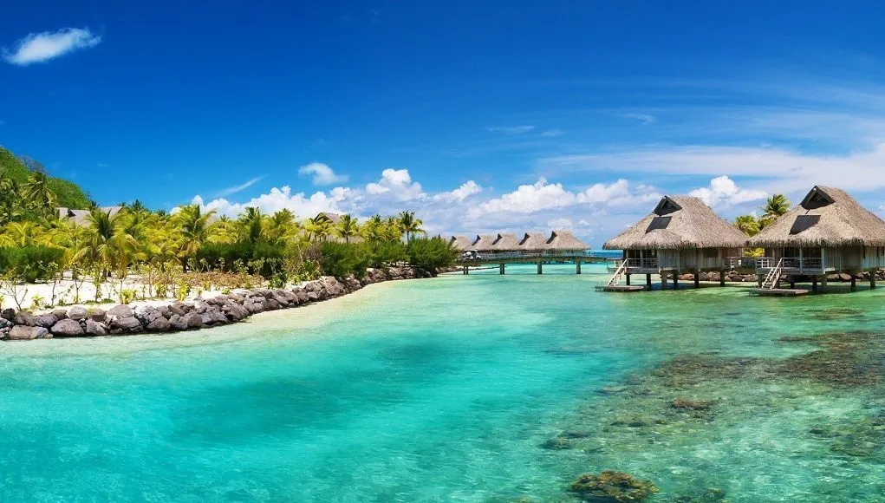

Latihan HTML
Ari saeful hakim
berikut gambarnya

Wisata di Indonesia
Penjelasan tentang pariwisata
Pariwisata adalah rangkaian aktivitas dan kegiatan perjalanan yang dilakukan oleh perorangan, kelompok atau keluarga ke suatu tempat secara sementara dengan tujuan mencari ketenangan, kedamaian, keseimbangan, keserasian dan kebahagiaan jiwa. Pariwisata didukung berbagai fasilitas serta layanan yang disediakan oleh masyarakat, pengusaha, pemerintah dan pemerintah daerah.
Pariwisata merupakan fenomena kebutuhan akan kesehatan dan pergantian suasana, penilaian yang sadar dan menumbuhkan (cinta) terhadap keindahan alam dan khususnya bertambahnya pergaulan berbagai bangsa dan kelas masyarakat. Pariwisata adalah kegiatan seseorang yang bepergian atau tinggal di suatu tempat di luar lingkungannya yang biasa dalam waktu tidak lebih dari satu tahun secara terus menerus, untuk kesenangan, bisnis ataupun tujuan lainnya.
Unsur-unsur Pariwisata
Pariwisata yang baik harus memiliki daya tarik, kemudahan perjalanan, sarana dan fasilitas serta promosi. Pengembangan pariwisata perlu didukung dengan perencanaan yang matang dan harus mencerminkan tiga dimensi kepentingan, yaitu industri pariwisata, daya dukung lingkungan (sumber daya alam), dan masyarakat setempat dengan sasaran untuk peningkatan kualitas hidup. Menurut Kurniawan (2015), unsur-unsur pengembangan pariwisata adalah sebagai berikut:
Kekayaan alam dan budaya merupakan komponen penting dalam pariwisata di Indonesia. Alam Indonesia memiliki kombinasi iklim tropis, 17.508 pulau yang 6.000 di antaranya tidak dihuni,[2] serta garis pantai terpanjang ketiga di dunia setelah Kanada dan Uni Eropa.[3]
Contoh tentang tempat pariwisata
- GUCI
- DIENG
- KEPULAUAN DERAWAN
latihan heading6